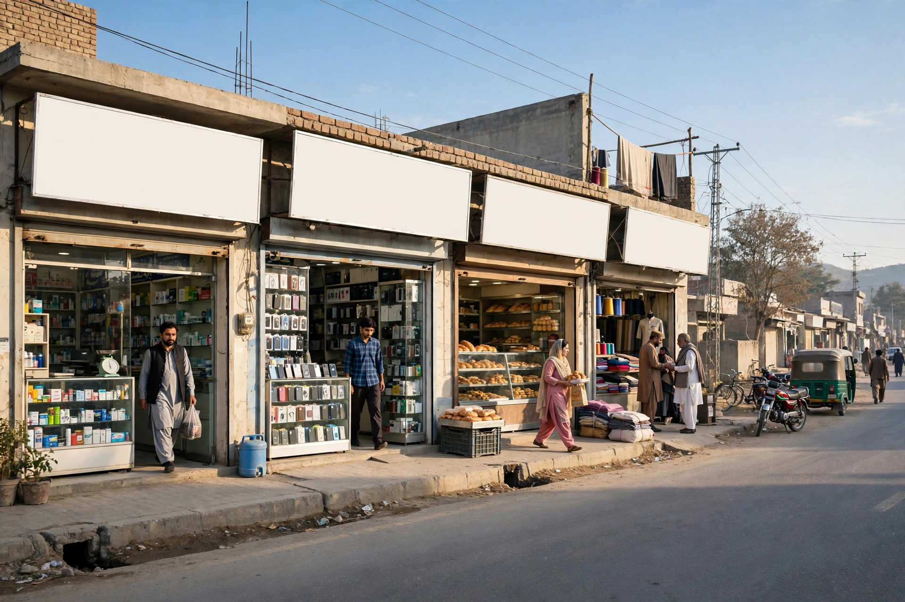

Some business owners in Chowk Azam still ask a fair question: our customers know us, the shop has stood here for years, so why does Google matter? It is a reasonable doubt in a town where trade runs on relationships. The answer is not that relationships stopped mattering. It is that a growing share of buying decisions, including decisions by people who know the town well, now pass through a phone screen first, and the customers with the least local knowledge, travellers on the main road, have no other way to find you at all.
This article looks at what being on Google actually means for a road-side market town: who searches, what they see, what it costs, and what it does not do. There are no miracles promised here. A Google presence will not fix bad service or unfair prices. What it does is make sure that when someone nearby is ready to buy what you sell, your business is among the names they consider. Zaheer Seo Expert is based in Layyah and serves Chowk Azam from there, and everything discussed below is work that can be managed online and by phone.
A Town That Sells to People Passing Through
Most towns serve mainly their own residents. Chowk Azam also serves motion itself. The Multan to Mianwali road carries trucks, buses, and families between districts, and those travellers need fuel, food, repairs, rest and supplies at unpredictable moments. When a tyre fails or a child needs medicine, the driver does not ask a local. He searches his phone, and the businesses Google shows him, with open hours and good reviews, are the businesses that receive him.
This passing trade is the purest case for being on Google, because search is the only signboard these customers will ever read. A roadside business that is invisible online is relying entirely on being noticed at driving speed. The location page for SEO services in Chowk Azam explains how local visibility work is organised for exactly this kind of town.

Locals Search Too, More Than Owners Think
It is easy to underestimate how much local behaviour has changed. Young buyers search before asking. A family planning a wedding purchase compares shops on the phone first. Someone needing a plumber, an electrician or a specific spare part at short notice will search rather than walk the bazaar in hope. Even loyal customers check hours on a holiday before setting out, and a wrong or missing listing sends them to whoever answered clearly.
These searches are not disloyal. They are simply how people now confirm a decision. The business that appears with correct details and kind reviews confirms itself. The business that does not appear leaves the decision to chance and to competitors who did the simple work of showing up.
What Being on Google Actually Consists Of
Being on Google is not one action but a small set of them. The foundation is the Google Business Profile: your name, category, location, hours, phone number, photos and reviews, shown in search and maps. Around it, some businesses add a simple website for detail, and listings on a few directories for consistency. That is the whole structure. There is no secret register and no fee payable to Google for the listing itself.
Our guide on getting found on Google Maps in Chowk Azam walks through the profile setup step by step.
- A claimed and verified Google Business Profile
- Accurate hours, phone number and map location
- Real photos and honestly earned reviews
- A simple website when the business needs one
- The same details repeated consistently online
What It Costs, and What It Does Not
The listing itself is free, and the basic upkeep costs time rather than money: perhaps a short session each month. Paid help is a choice, not a requirement, useful mainly for owners whose market days leave no spare hour. Paid advertising is a separate thing entirely and is not needed for the results described in this article.
Being on Google also has honest limits. It cannot create demand for something nobody wants, and it does not reward a business that treats customers badly, because reviews will say so publicly. It works as an amplifier: good, established Chowk Azam businesses with real reputations gain the most, because Google finally shows strangers what locals already know about them.
The Cost of Staying Invisible
Invisibility is rarely dramatic. No single day goes wrong. Instead, a traveller chooses the workshop that appeared on his phone, a family orders from the shop whose hours were clear, a farmer sells to the dealer whose number he could find. Each loss is small and silent, and the owner never learns it happened. Over a year, across hundreds of such moments, the gap between visible and invisible competitors quietly widens.
There is also a defensive point. If you do not claim your listing, its details may still exist, created from other sources, possibly wrong, and you cannot correct them or answer reviews left there. Claiming the profile is partly about gaining customers and partly about protecting a name you spent years building in the market.
A Sensible First Month
For a Chowk Azam business starting from nothing, the first month is simple. Week one: claim and verify the profile and correct the basics. Week two: add good photos and a clear description. Week three: ask a handful of genuinely satisfied customers for reviews and reply to any that arrive. Week four: check the listing as a customer would, on a phone, and fix anything that looks wrong or missing. After that, monthly upkeep is enough for most businesses.
If you would rather hand this over, Zaheer Seo Expert can manage it from Layyah, online and by phone. Zaheer Seo Expert has no office in Chowk Azam; all help is delivered remotely, and will tell you honestly if your business only needs the free basics done once. The general picture for the town is also covered in SEO for Chowk Azam businesses, which new readers may find a useful companion to this article.
Frequently Asked Questions
Is being on Google only useful for big city businesses?
No. It is arguably more useful in a town like Chowk Azam, where a large share of trade comes from travellers and nearby villages who cannot rely on local knowledge. Nearby searches are exactly what Google profiles are built for.
Does Google charge businesses to appear in search and maps?
The business profile and organic search appearance are free. Google charges only for advertising, which is optional and separate. Anyone who claims Google demands a fee for a normal listing should not be trusted.
I have traded for years without Google. Why change now?
Because customer habits changed around the business. Locals still value your reputation, but both they and passing customers now confirm choices on their phones. Being listed simply lets your existing reputation reach people at that moment.
What is the single most valuable first step?
Claim and complete your Google Business Profile with accurate hours, phone number, category and photos. It is free, it is the result most nearby searchers see, and everything else in local SEO builds on top of it.
Want More Customers From Google?
Call 0327 7350830 or email seozaheer14@gmail.com. Zaheer Seo Expert, Layyah - Rajan Shah Road, Rana Nagar, Chak 116 TDA, Pakistan. Open 24 hours.
Get Your SEO Strategy →